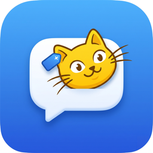
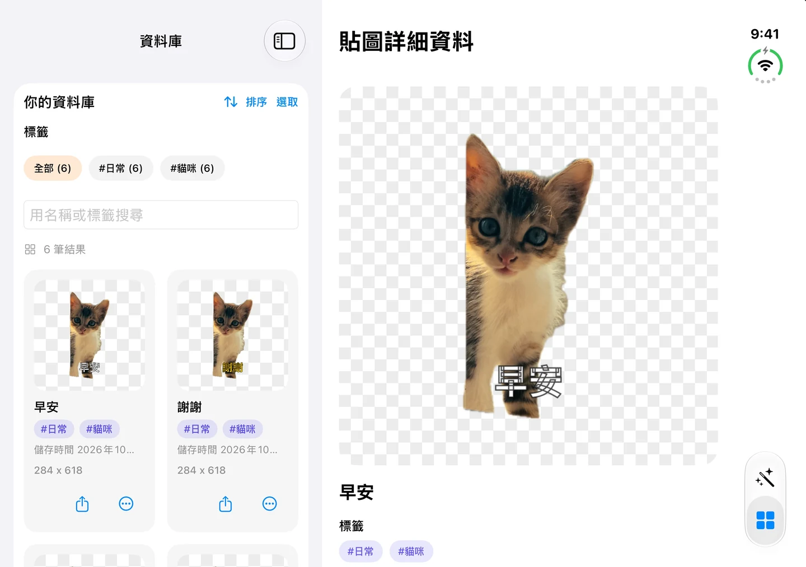
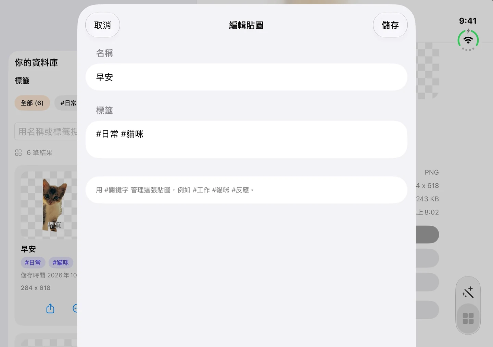
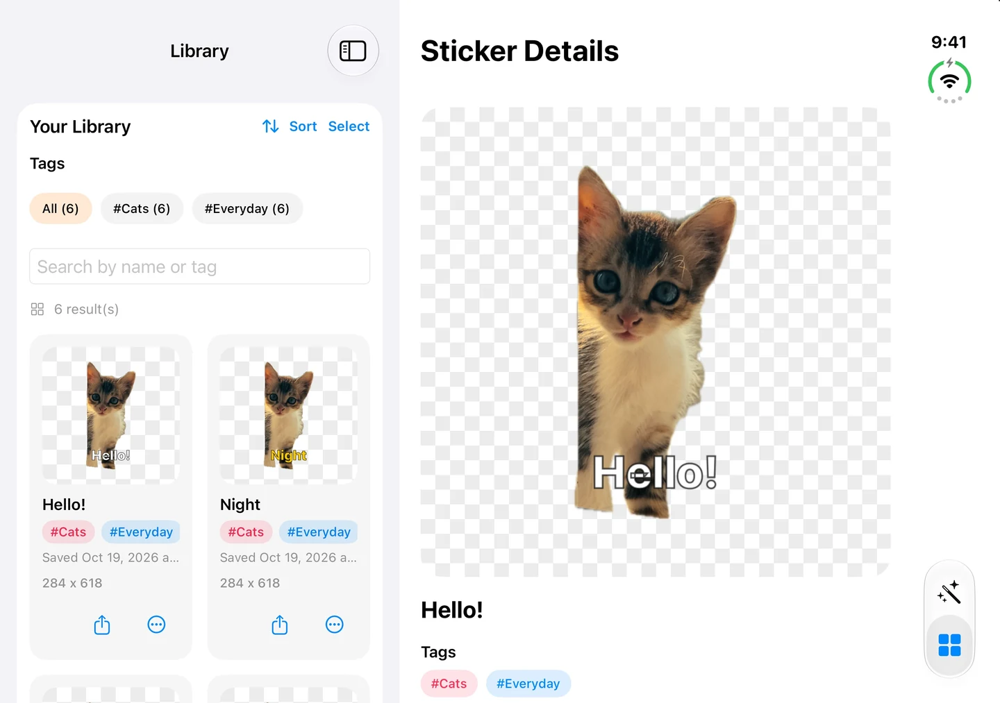
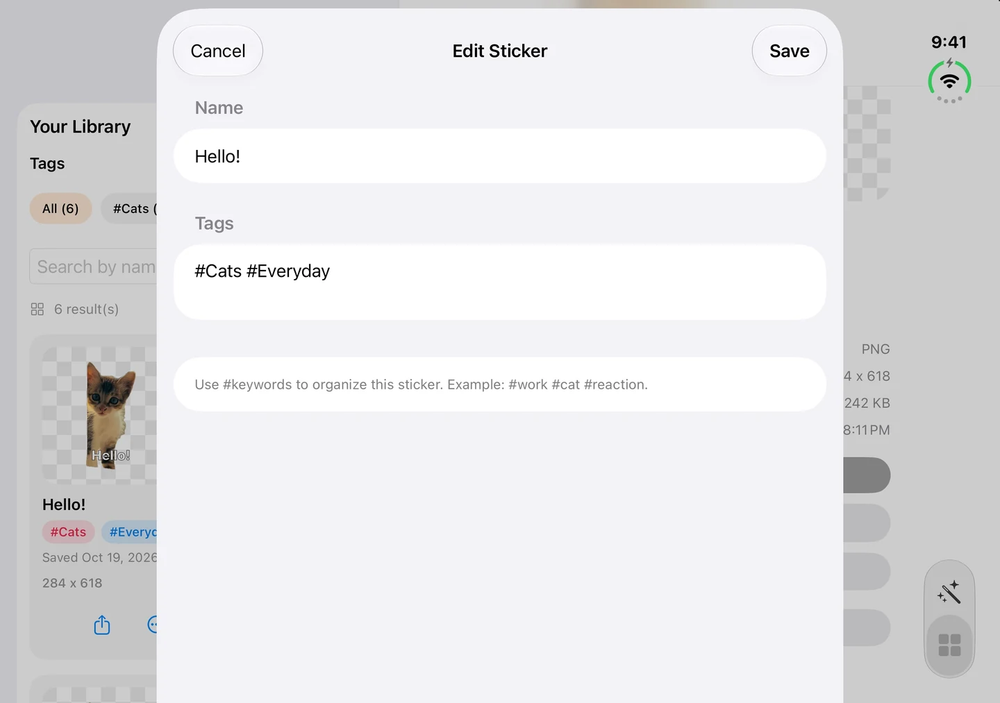

1.2.1 新版上架 · iPhone / iPad貼圖寶庫
把喜歡的照片，變成隨手可用的貼圖。
替寵物照片加一句早安，為日常反應留一張專屬貼圖。去背、加字，再用名稱與標籤整理收藏，想分享時直接在 iMessage 找到它。

1.2.1 更新：製作與整理更順手
2026 年 10 月 20 日上架。本次更新聚焦版面、輸入操作與詳細資料顯示。
- 改善 iPhone Duo、螢幕旋轉與大字體的版面配置。
- 改善編輯文字、貼圖名稱與標籤時的鍵盤操作。
- 修正首次開啟貼圖詳細資料時可能出現空白畫面的問題。
- 持續支援 iOS 26.4。
- 可用裝置
- iPhone / iPad
- 下載方式
- 付費下載
iPhone／iPad 1.2.1，持續支援 iOS／iPadOS 26.4。照片去背在裝置上完成；可選擇本機保存或私人 iCloud 同步。




從一張照片，到自己的貼圖收藏
本機保存，或選擇 iCloud 同步
照片去背在你的裝置上完成，不會上傳到開發者伺服器處理。你可以在 App 內選擇把貼圖留在本機，或透過私人 iCloud 帳號同步收藏；同步需要網路及可用的 iCloud 帳號。
以上為 1.2.1 的 iPhone Duo 模擬器實際畫面，使用示範貼圖。
Personal Sticker Vault
Turn a favourite photo into a sticker you can find again.
Add a greeting to a pet photo or make a reaction of your own. Remove the background, add text, and organise your collection by name and tag, ready to send in iMessage.

What’s new in 1.2.1
Released October 20, 2026. This update focuses on layouts, editing, and reliable sticker details.
- Improved layouts for iPhone Duo, screen rotation, and larger text sizes.
- Improved keyboard handling when editing text, sticker names, and tags.
- Fixed a possible blank screen when opening sticker details for the first time.
- Continued support for iOS 26.4.
- Devices
- iPhone / iPad
- Download
- Paid download
Version 1.2.1 for iPhone and iPad continues to support iOS/iPadOS 26.4. Background removal runs on your device; choose local storage or private iCloud sync.




From one photo to a personal collection
Keep it local, or choose iCloud sync
Photo background removal happens on your device, without sending images to a developer server for processing. Choose local storage or sync your collection through your private iCloud account in the app. Sync requires internet access and an available iCloud account.
Screenshots show the actual 1.2.1 interface in the iPhone Duo simulator with sample stickers.